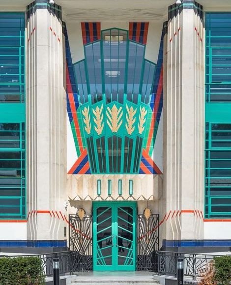
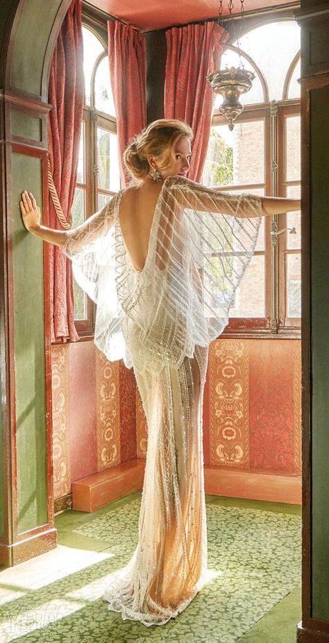
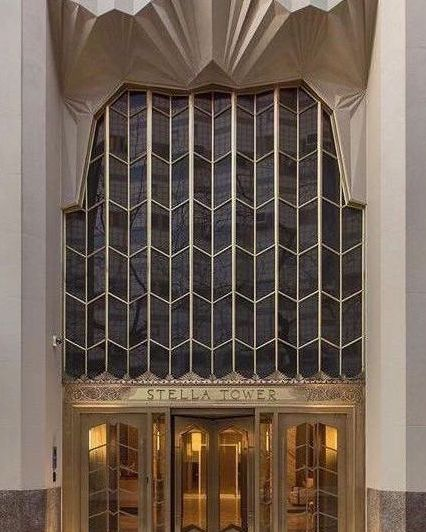
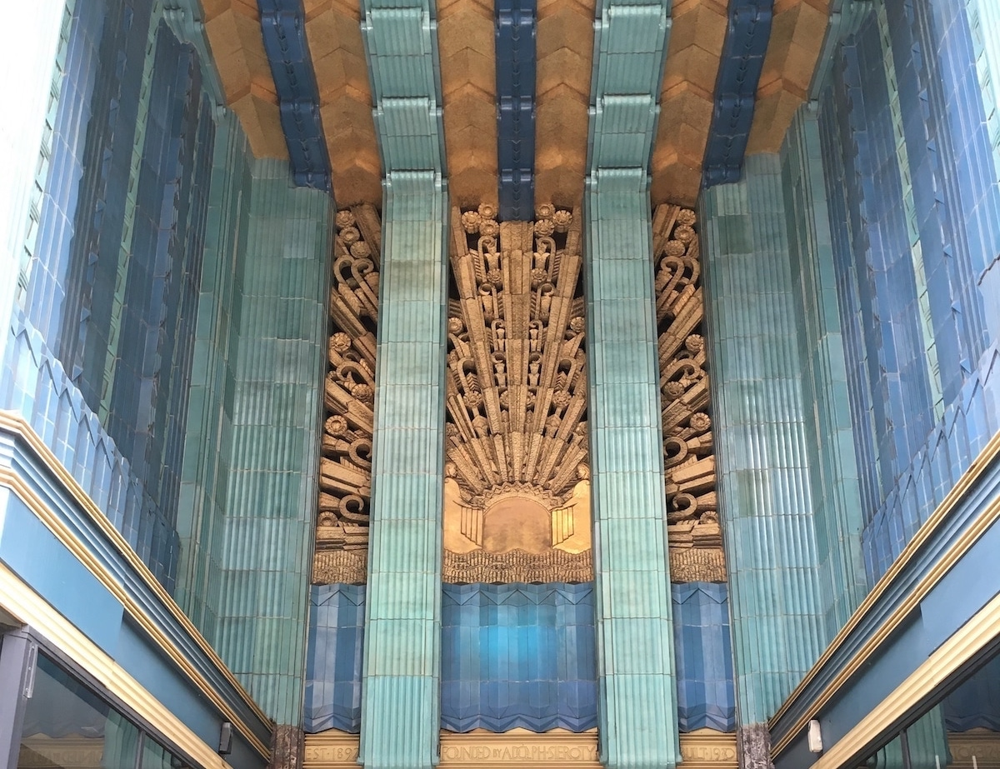
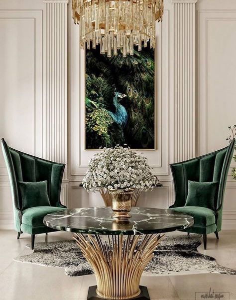
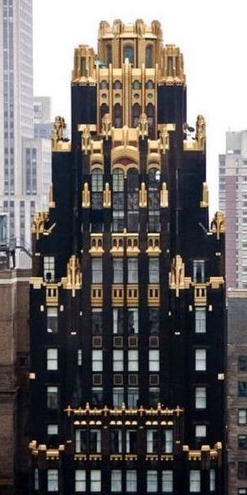
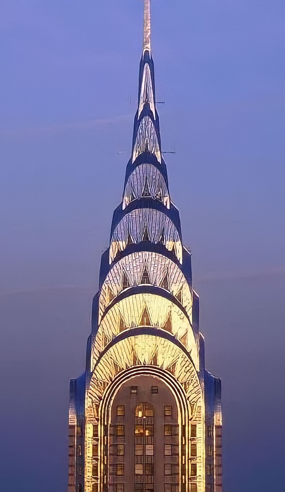
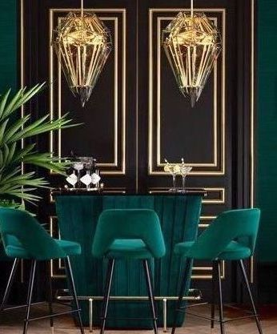
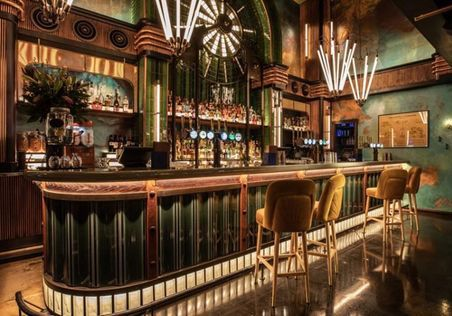

Explore the influence of the Art Deco movement. Art Deco is a style of visual arts from the 1920s. This movement inspired architecture, interior design, fashion, furniture, art, and the film industry. Art Deco continues to be a staple art style and has been incorporated into today’s modern world.
Art, fashion, and design changes throughout the world when we enter another decade. When you think of
the 1920s, you most likely picture Fitzgerald’s Great Gatsby, flappers, speakeasies, and luxurious art.
Art Deco is the iconic movement of this era as it emphasizes geometric shapes, strong lines, and
combining luxurious materials such as gold, ivory, platinum, and diamonds.
This movement began after World War I when European people wanted to get rid of their past and embrace
their future with luxurious arts and design. Art Nouveau is a prior movement that emerged in the late
19th century and it inspired Art Deco. Art Nouveau was a popular style in Europe and the style was much
more ornate in comparison to Art Deco. However, if Art Nouveau never existed, the Roaring Twenties would
have looked very different from how we remember it as. In 1925, the Exposition Internationale des Arts
Décoratifs et Industriels Modernes was held in Paris which was an exhibition that featured over 15,000
artists, architects, and designers. People from all over the world came to this exhibition and it
catapulted the Art Deco movement.
The Art Deco movement grew out of Europe after this exhibition. The United States held a
similar exhibition the following year in which Art Deco influenced many major cities. Art Deco
was the emblem of the modern city as it emerged in art, architecture, design, and fashion. The
Radio City Music Hall and the Chrysler building in New York City feature the Art Deco movement.
The movement fell out of style during World War II in the 1960s. However, Art Deco was revisited
and continues to be utilized in modern-day design.
View the gallery below to see how the Art Deco movement has inspired
architecture, fashion, and interior design.
Gallery of images to showcase how the Art Deco movement has influenced architecture, fashion, and interior design.
        Art Deco has a huge influence in Hollywood as well. These are a few film examples of Art Deco as the main style.